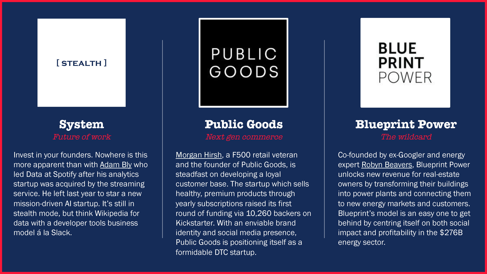

When I read the position description for the Platform & Operations role at Red Sea Ventures, I was ecstatic. To put it bluntly, it is a dream opportunity to work on a small, agile team with partners I admire and a portfolio of big-impact companies that I love - many of which I’m an avid consumer of.
A dream role deserves more than just a resumé submission. So I’ve created this page to lay out three reasons why I’d be a stellar candidate for your team at Red Sea Ventures.
One. The Connector
What fuels me is people. I thrive off of meeting new people, learning from them, partnering with them. I’ve brought together entrepreneurs, investors, and advisors as part of startup communities since college when I led partnerships for the largest hackathon in Canada and helped source deals as a strategy intern for Real Ventures, a seed-stage VC firm based in Montréal, Canada’s AI hub. And since moving to New York two years ago, it’s been no different. I’ve attended hackathons, data and design events, and am part of Dreamers // Doers, a female-focused network of entrepreneurs, advisors and investors. I’m energized by the founders I’ve met who’ve turned problems into opportunities, and ideas into companies across this city’s $71B startup ecosystem. Three early-stage startups on my radar that RSV should connect with (if you haven’t already!) are:

Above: System founded by Adam Bly, Public Goods founded by Morgan Hirsh, Blueprint Power founded by Robyn Beavers.
Two. The Creative
Whether it’s shipping code to build engagement features as a product manager, or crafting prose as a writer, I aim to create experiences that people need, want, and love. RSV’s portfolio of digital disruptors deserve a platform fit for the digitally native, that centralizes stakeholders and resources while building out new relationships and networks. Beyond the obvious - robust talent networks, external and internal events, social media presence - I’m excited by two ideas to grow RSV’s network:
Three. The Resolute
My resumé isn’t linear. I’m intrinsically curious, but it’s through determination and hard work that I’ve turned my curiosity into passion and results:
I studied at McGill University majoring in Biochemistry & Economics. In my first year, I worked at a hospital where I saw how technology was augmenting the healthcare sector. I set about on a mission to teach myself to code.
Equipped with programming basics, I landed a job at Intel as a Product Manager designing a new first-time user feature for their core consumer security product.
As a new graduate, I wanted to be in the thick of solving high-impact, global challenges and was hired as the youngest consultant at the World Health Organization. I was promoted to Special Assistant on Innovation strategizing partnerships and investments with tech startups in emerging markets.
I’ve turned a passion for wordsmithing into a small business authoring and ghost-writing op-eds and articles for outlets like The Independent, HuffPost, and New York Times’ The Edit.
I’ve brought together more than 1,300 students and technologists through the tech events I’ve curated in Montréal, Geneva, New York, and Toronto.
Thank you for your consideration!